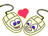
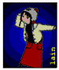
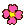
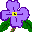
★ WELCOME TO THE WIRED ★ SWEETHEART SWEETHEART... I LOVE YOUUUUUUUUUUUU ★ FELIZ DÍA DE LA PRIMAVERA ★ DESCUBRE EL SECRETO ★ PRESENT TIME PRESENT DAY AHAHAHAH ★
~ Waiting for a sunny day to dry away my tears: Wishing that your love could stay ~ Twenty million years
TERRONCITA<3
, __ \/ __
/\^/`\ /o \{}/ o\ Si tuviera una flor por cada vez
| \/ | \ () / Que pienso en vos, mi jardín
| | | `> /\ <` ,,, estaría lleno...
\ \ / @@@@ (o/\/\o) {{{}} _ _
'\\//' @@()@@ _ ) ( ~Y~ @@@@ _{ ' }_
|| @@@@ _(_)_ wWWWw .oOOo. @@()@@ { `.!.` }
|| ,/ (_)@(_) (___) OO()OO @@@@ _ ',_/Y\_,'
|| ,\ | /) (_)\ Y 'OOOO',,,(\|/ _(_)_ {_,_}
|\ || |\\|// vVVVv`|/@@@@ _ \/{{}}}\| (_)@(_) | ,,,
| | || | |;,,,(___) |@@()@@ _(_)_| ~Y~ wWWWw(_)\ (\| {{{}}
| | || / / {{}}} Y \| @@@@ (_)#(_) \| (___) | \| /~Y~
\ \||/ /\\|~Y~ \|/ | \ \/ /(_) |/ |/ Y \|/ |//\|/
jgs\ `\\//`,.\|/|//.|/\\|/\\|,\|/ //\|/\|.\\\| // \|\\ |/,\|/
^^^^^^^^^^^^^^^^^^^^^^^^^^^^^^^^^^^^^^^^^^^^^^^^^^^^^^^^^^^^^^
ONLINE MEMORY ARCHIVE 000001
● ● ● memories.exe — gallery view ×
File Edit View Favorites Help
D
“There is nothing in the world that i ever wanted more than to feel you deep in my heart.”
◢◤◢
♫
NOW PLAYING: ANTENNAE And i would sing to you... everynight if you want me to...
ABRIR PLAYLIST ↗
C:\\heart\\our-memories\\ clickea una imagen para agrandarla
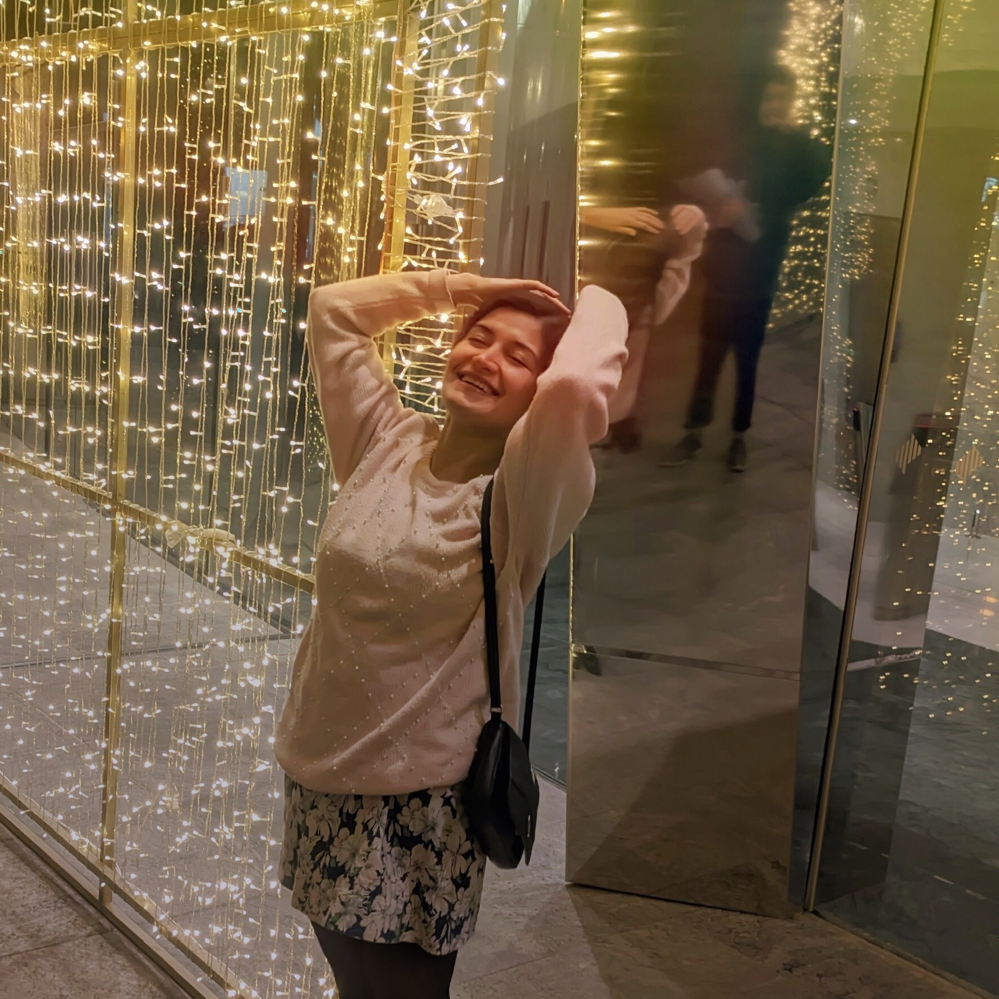
memory_01.jpg 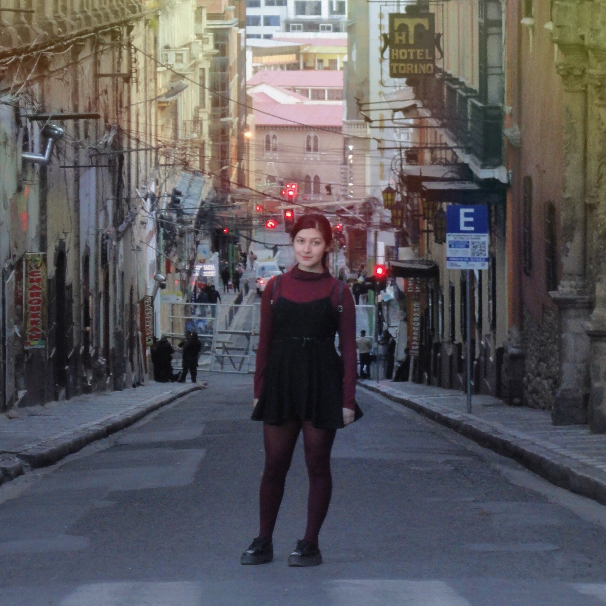
memory_02.jpg 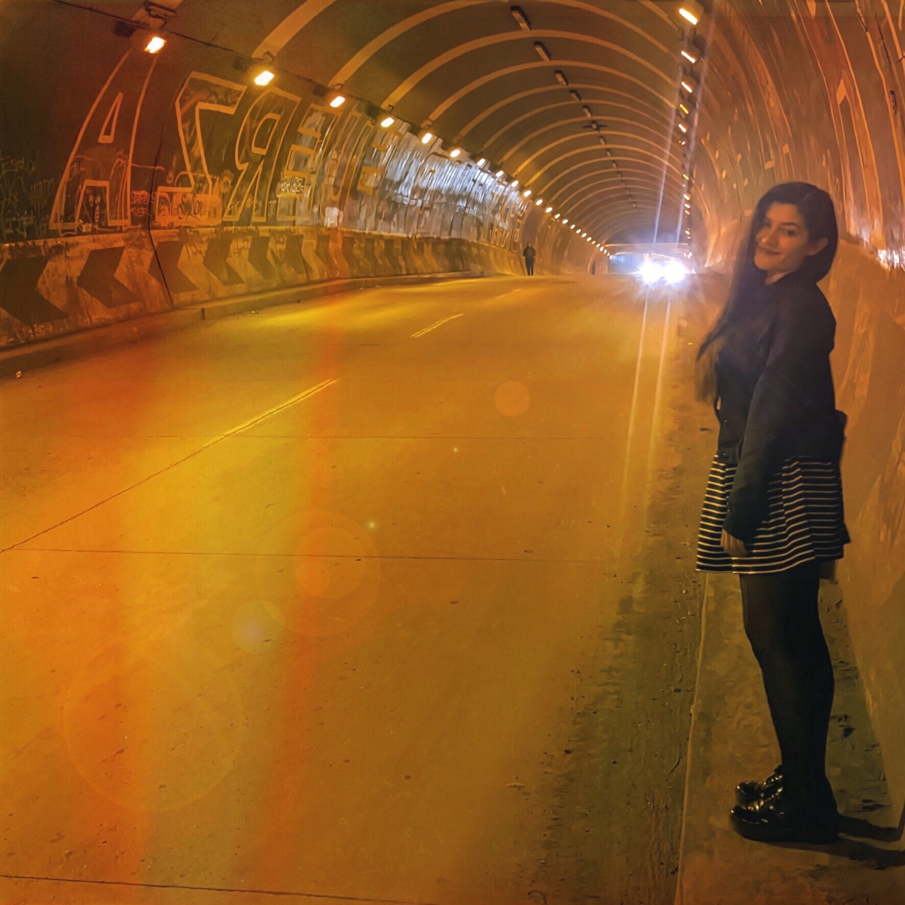
memory_03.jpg 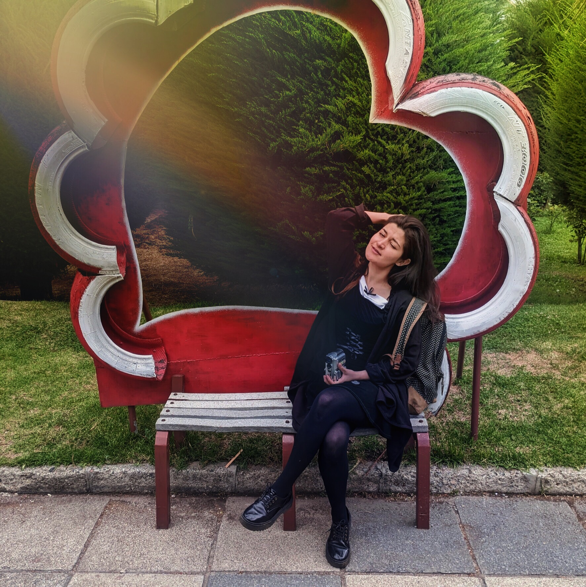
memory_04.jpg 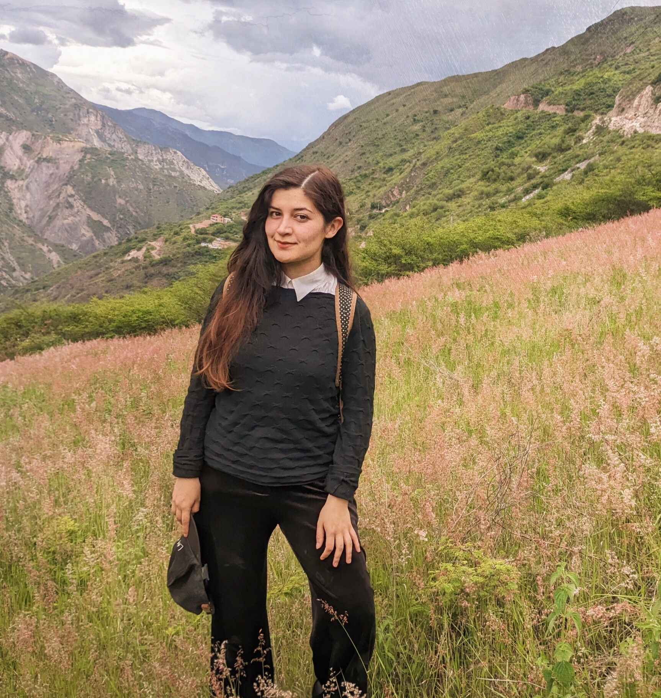
memory_05.jpg 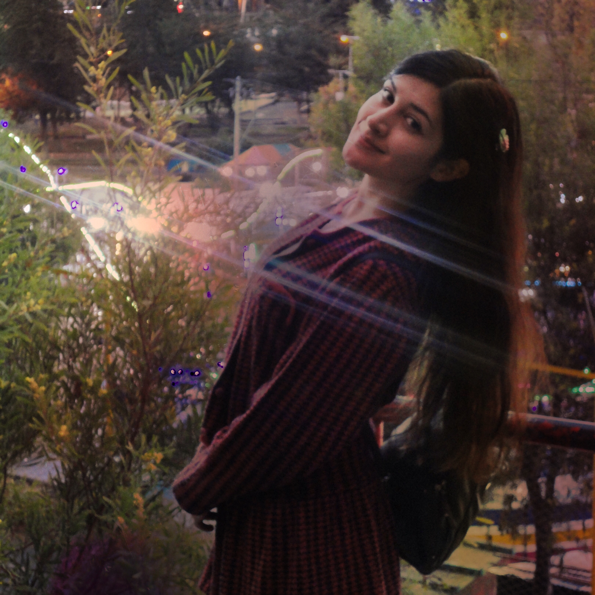
memory_06.jpg 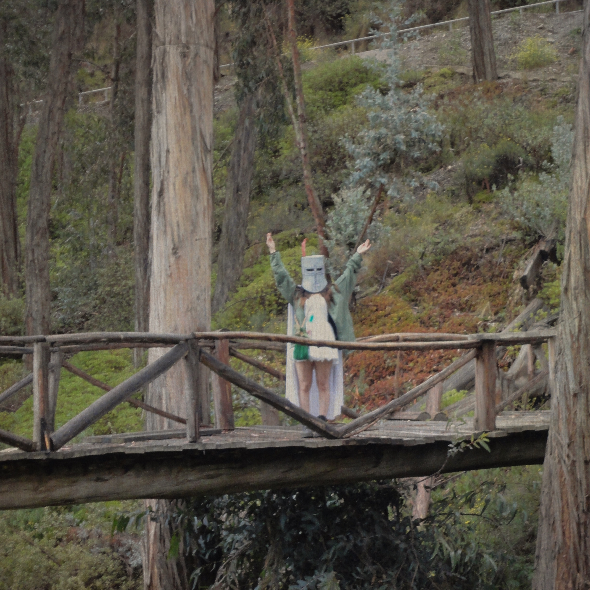
memory_07.jpg 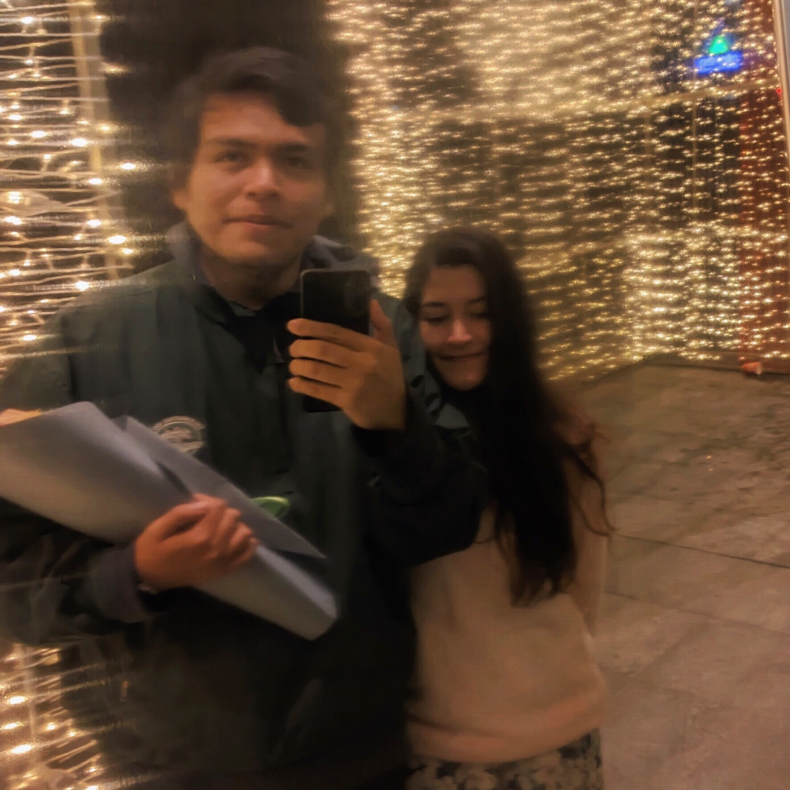
memory_08.jpg
8 items | connection stable | en el core de mi GPU (Gustavion Processing Unit) está un Dalmion
×
× ☆ SECRETO DESBLOQUEADO ☆
Encontraste el secreto. siempre fue tuyo.